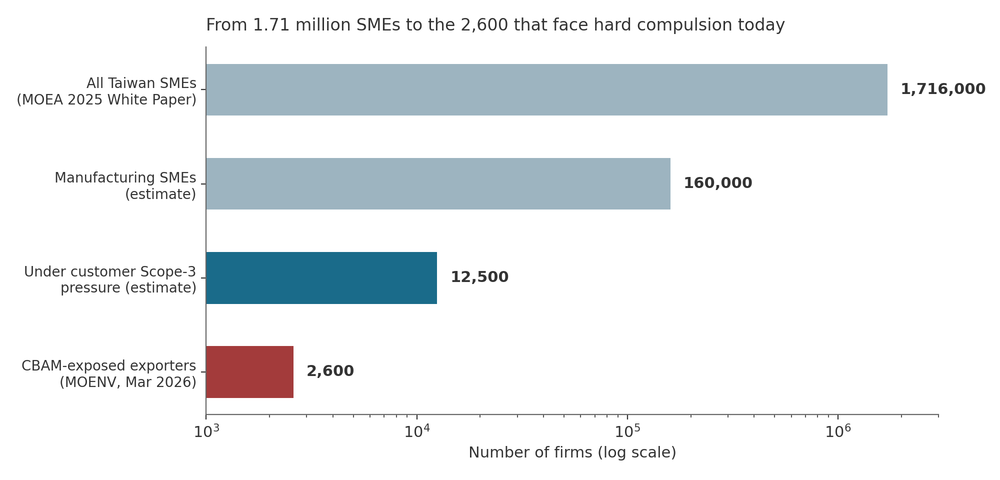
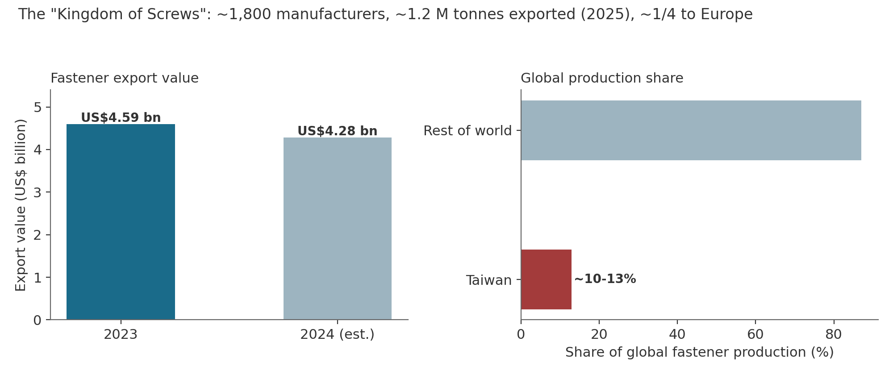
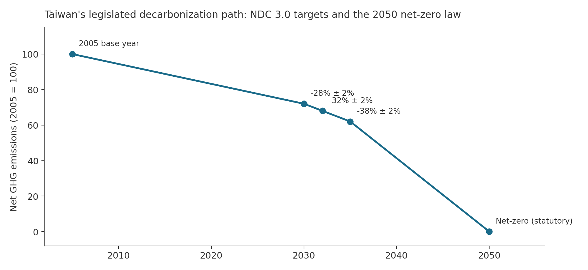
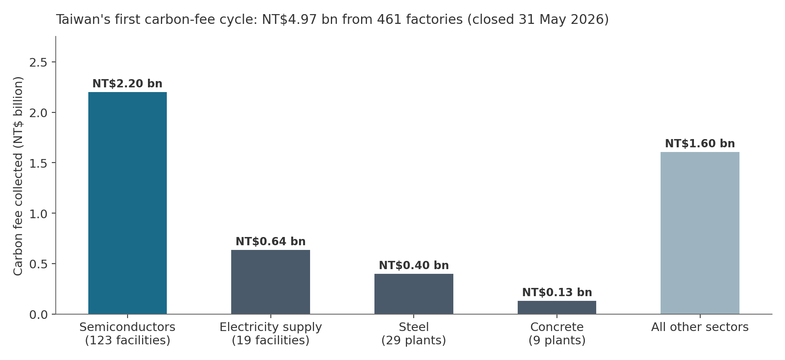
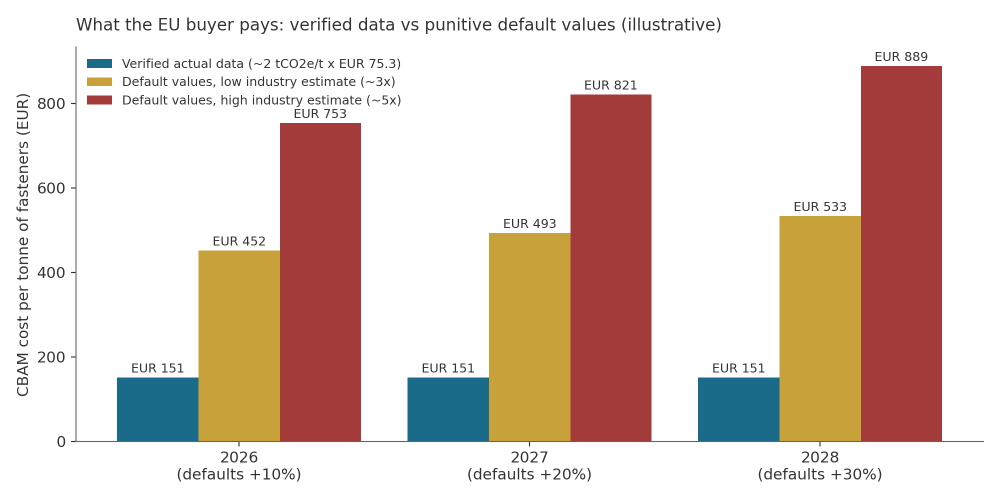

In 2026, a quiet rule change in Brussels began deciding which small factories in southern Taiwan keep their European customers. This proposal explains that situation from zero, shows with verified numbers why it matters, and presents a solution designed for Taiwan's 2026 Presidential Hackathon. Before the story, five concepts:
With those five ideas, the story is simple: Taiwan's export SMEs are being asked, by market forces they cannot see or negotiate with, to produce data they have no tools to produce. The rest of this document quantifies that sentence and proposes what to build about it.
Taiwan runs on small business. The Ministry of Economic Affairs counts 1.716 million small and medium enterprises — 98.87% of all firms — employing 9.19 million people, or 79.3% of the workforce[11]. That headline number is often used to dramatize the carbon problem ("1.71 million SMEs must decarbonize"). This proposal refuses that framing: most of those firms are shops and services with no carbon obligation at all. The honest picture is one of concentration — and it is shown in Figure 1.

The 2,600 firms at the sharp end are concentrated in one place and one product. The Gangshan–Luzhu district of Kaohsiung — nicknamed the "Kingdom of Screws" — hosts roughly 1,800 fastener manufacturers, about 700 of them organized under the Taiwan Industrial Fasteners Institute[16][12]. Their global standing is out of all proportion to their size (Figure 2, Table 1).

| Indicator | Value | Source, date |
|---|---|---|
| Global rank | Top-3 exporter (#2 by value in 2023 reporting; #3 by volume in 2025–26 reporting) | CommonWealth 2023[13]; Kaohsiung Times 2026[12] |
| Share of world production | ~10–13% | [12][16] |
| Export volume | ~1.2 million tonnes (2025) | [12] |
| Export value | US$4.59 bn (2023); ~US$4.28 bn (2024 est.) | Fastener World[25] |
| Share destined for Europe | ~one quarter | [13] |
| Number of manufacturers | ~1,800 (mostly SMEs; TIFI ~700 members) | [16] |
| Typical firm structure | Family-run; nationally 51.79% of SMEs are sole proprietorships / family firms, 58.22% older than 8 years | MOEA White Paper[11] |
| Embedded emissions of product | ~2 tCO2e per tonne of fasteners (industry estimate) | [17] |
Economically, these are "hidden champions": firms with aerospace-grade precision supplying European automakers, administered by family members on spreadsheets, with aging workforces and no in-house data or ESG staff. Environmentally, fastener-making is steel plus electricity plus heat — wire drawing, cold forging, thread rolling, heat treatment, electroplating — drawn from a grid that emitted 0.474 kgCO2e per kWh in 2024[23], high by European standards. The SME controls neither the grid nor the steel mill. What it could control — proving its actual numbers instead of being assigned worst-case ones, and running its flexible loads at cleaner, cheaper hours — is precisely what it has no tools for.
Taiwan wrote its climate destination into law. The Climate Change Response Act (2023) makes net-zero emissions by 2050 a statutory goal, and the government's "NDC 3.0" targets, announced in 2025, commit to cuts of 28%±2% by 2030, 32%±2% by 2032, and 38%±2% by 2035 against the 2005 baseline — among the most ambitious trajectories in Asia[22] (Figure 3).

The first enforcement instrument is the carbon fee. Firms emitting more than 25,000 tCO2e per year (Scope 1+2) pay NT$300 per tonne, reducible to NT$100 or NT$50 if the regulator approves a rigorous "Self-Determined Reduction Plan"; industries at high risk of relocating abroad apply a 0.2 adjustment coefficient, an effective floor near NT$10/t[4][5]. The first collection cycle closed on 31 May 2026 and raised NT$4.97 billion from 461 factories run by 240 companies[2][3] (Figure 4). Tellingly, of ~430 factories that applied for the discounted rates, about 28 were withdrawn or rejected — evidence that even well-resourced corporations struggle to produce reduction plans that survive regulatory scrutiny[2].

Three forward signals matter: the 25,000 t threshold is set to be lowered over time; fee levels are signalled to rise (potentially NT$1,200–1,800/t by 2030); and a pilot emissions-trading system is planned around 2027[31]. Firms outside the fee today will not all stay outside it.
The EU charges its own industries for carbon through the ETS. To stop production simply relocating to unregulated countries ("carbon leakage"), CBAM extends that carbon price to imports. Table 2 gives the timeline that turned this from paperwork into money.
| Date | What happens | Source |
|---|---|---|
| Oct 2023 – Dec 2025 | Transitional phase: EU importers report embedded emissions quarterly; no payment; generic default values broadly permitted | [6] |
| Oct 2025 | "Omnibus" simplification: 50-tonne annual de minimis exempts ~90% of importers while retaining ~99% of covered emissions — but the threshold is counted cumulatively per importer, so small suppliers can still be swept in | [7] |
| 1 Jan 2026 | Definitive phase: importers must buy and surrender CBAM certificates. Certificate price = quarterly EU ETS auction average: EUR 75.36 (Q1 2026), EUR 75.28 (Q2 2026) | [6][24] |
| 2026–2028 | Default values set at highest observed intensity, marked up +10% (2026), +20% (2027), +30% (2028). Complex goods: at least 80% of reported emissions must be actual, third-party-verified data | [8][9] |
| Sep 2027 | First certificate surrender, covering 2026 imports | [1] |
| Sep 2026 (pending) | European Parliament plenary vote on extending CBAM to ~180 downstream steel/aluminium product categories, with obligations from 1 Jan 2028 (Council position adopted June 2026) | [10] |
Taiwan's exposure is documented by its own environment ministry: Taiwan ranked 13th among countries exporting CBAM goods to the EU, shipping 3.74 million tonnes during the transitional period — overwhelmingly screws, fasteners, and stainless/carbon steel — produced by about 2,600 SMEs[1]. The legal duty sits on the EU importer; the Taiwanese factory's compulsion is commercial. That distinction is the crux of the whole problem, as the next section shows.
Take a representative Gangshan SME shipping standard carbon-steel fasteners (~2 tCO2e embedded per tonne of product[17]). At the official EUR 75.3 certificate price[24], its EU buyer pays about EUR 150 per tonne of fasteners — if the factory supplies verified data. If it cannot, the buyer falls back on default values that industry analysts estimate at 3–5 times the verified cost, escalating each year (Figure 5). Against sector-average export prices near US$3,400–3,600 per tonne — and far less for commodity lines — analysts put worst-case default exposure as high as 30–50% of product value[17].

The commercial logic is brutal and impersonal: an importer facing two otherwise identical Taiwanese suppliers keeps the one whose data pack arrives with the shipment. And the capability to respond is demonstrably thin: sector surveys found 60% of fast-growing SMEs had completed no carbon inventory, 80% had no reduction targets, and half cited talent shortage as the binding constraint[13]. A handful of cluster firms (e.g., Chan Chin C., Fang Sheng) have obtained ISO 14067 product-footprint certificates through subsidized counseling[30] — proof the task is tractable, and proof of the economics problem: consultant-priced, one-off snapshots cannot serve recurring, per-product, per-quarter data demands across 2,600 firms.
| Ratchet | Mechanism | Effect on a Gangshan SME |
|---|---|---|
| Default markup | +10% (2026) → +20% (2027) → +30% (2028), automatic[8] | The penalty for having no data rises every year without anyone lifting a finger |
| Scope extension | ~180 downstream steel/aluminium categories proposed; obligations from 2028 if passed (EP vote Sep 2026)[10] | Neighbours making springs, wire, hand tools join the same regime |
| Product passports | EU Digital Product Passport registry launches Jul 2026; batteries mandatory 2027; steel, textiles, electronics phased 2027–2030[28] | Product-level, machine-readable sustainability data becomes a condition of EU market access |
| Domestic expansion | Fee threshold lowering; rates rising toward NT$1,200–1,800/t by 2030; ETS pilot ~2027[31] | Firms outside the carbon fee today are progressively pulled inside it |
In 2024, a fastener maker's carbon ignorance cost it nothing. In 2026 it costs its buyer several hundred euros per tonne and puts the relationship at risk. By 2028 the penalty is a third higher, the covered catalogue potentially far larger, and Taiwan's own regulator closer to the factory gate. The problem is not a wave; it is a rising floor.
Taiwan's government has not been idle — it has built an entire awareness stack. What no instrument does is produce the artifact that decides procurement outcomes: verified-ready, per-product embedded-emissions data in the European Commission's format. Table 4 is a capability audit of everything that exists, verified as of July 2026.
| Instrument | What it does | What it does not do |
|---|---|---|
| CAAS "SME Carbon Reduction Service Station" (MOEA)[19] | Courses, articles, green-product promotion, consultant referrals | No computation of any kind; not a reporting tool |
| IDB Carbon Emissions Calculator (MOEA)[21] | Free web tool: bills + fuel lists → rough annual company-level CO2e | No product-level allocation, no CN-code output, no CBAM format, no reduction planning |
| MOENV CBAM Help Platform (Mar 2026)[1] | Information hub and two-way consultation channel for affected SMEs | Explicitly informational; computes nothing |
| Taipower app / eBill[20] | Consumption charts, tariff simulation, usage alerts for smart-meter customers | No emissions conversion; no compliance artifacts |
| tre100 (CIER, Dec 2025)[26] | Renewable-electricity pledge registry for firms below RE100's threshold | No measurement tooling, no accounting |
| Private ESG software + consultants | Organizational inventories; real ISO certifications via subsidized counseling[30] | Per-engagement pricing; recurring per-product CBAM packs remain manual, unaffordable at micro-SME scale |
The gap, stated precisely: no instrument converts SME-native documents — a Taipower bill, a stack of invoices, a production ledger — into importer-ready, verifier-structured, per-CN-code emissions data, repeatably and at near-zero marginal cost. The government stack ends at awareness; the market stack prices out the small end. And because MOENV has already built the informational front door[1], a computational layer designed for integration completes a stack the state has visibly started building.
CarbonPass is a local-first AI compliance and energy-optimization copilot for export SMEs, prototyped on the fastener cluster. In one sentence of user experience: photograph your electricity bill and invoices inside LINE, answer three questions in Mandarin or Taiwanese, and receive (a) the carbon data pack your European buyer needs, (b) the money it saves them, and (c) a production schedule that cuts your power bill and makes next quarter's numbers better.
Document intelligence ingests bills, invoices and production records on the factory's own device or premises — raw data never leaves. The engine then performs the two computations generic calculators cannot: allocation (splitting facility energy across product lines and CN codes using production volumes, machine ratings and operating-hour heuristics, with quantified uncertainty per line — a strict CBAM requirement that invoices alone cannot satisfy) and assembly of "specific embedded emissions" per the EU rulebook (simple-vs-complex-goods logic, wire-rod precursor from mill certificates or conservative default fallback, output rendered in the Commission's template structure). The most persuasive output is one screen: "with your data, your buyer surrenders ≈EUR 150/t; without it, ≈EUR 450–750/t and rising" — a retention argument the owner can forward to the customer.
Taiwan publishes its power system's generation by unit every 10 minutes as open data[27]. CarbonPass computes an hourly grid-carbon-intensity curve from that public feed, overlays Taipower time-of-use tariffs (summer peak rates run several times the off-peak rate[20]), and runs a scheduling optimizer over the factory's flexible loads — heat-treatment furnaces, compressors, plating rectifiers — against order deadlines stated in the chat. Input is 15-minute smart-meter data the customer exports from their own Taipower account (consent-based; no third-party API dependency). Output: a shift plan, projected NT$ savings, projected tCO2e reduction, and a monitored before/after ledger — a continuously documented reduction trajectory structured to the baseline-and-monitoring logic of ISO 14064-2. Stated carefully: structured to the standard's logic; certification remains the accredited verifier's act. Every avoided tonne also shrinks the next data pack — measurement and mitigation feed each other.
The front end is not a dashboard but a conversation in LINE, Mandarin/Taiwanese-first, voice-friendly, zero ESG vocabulary. "拍一張電費單" — snap a photo of the power bill — is the entire onboarding. The excluded party here is a person: a 60-plus owner-operator who will never log into a European portal or read a 2,400-page implementing regulation[8], and should not have to. Digital inclusion — the Handbook's "ages, regions, and needs" — is delivered as an interface property, not a slogan.
| Direction | Artifact / use | Trigger |
|---|---|---|
| International | CBAM data packs per CN code | Definitive phase, live since Jan 2026[6] |
| Customer Scope-3 questionnaires (TSMC-chain, global brands) | SBTi/RE100 supplier programs[14] | |
| ISO 14067 preparation; Digital Product Passport payloads | ESPR phase-in 2027–2030[28] | |
| Domestic | Standing organizational inventory (ISO 14064-1-style) | Carbon-fee threshold lowering[31] |
| Documented reduction ledger, positioned for the voluntary-credit mechanism (credits offset fee liability at 1.2:1, capped at 10%) | MOENV voluntary reduction rules[33] | |
| Bank-ready carbon data for sustainability-linked lending | FSC Green Finance policies |
A proposal must justify its life after the demo. CarbonPass's forward case rests on dated regulatory trajectories, not speculation:
The expansion sequence is therefore: fasteners (2026, live compulsion) → downstream steel/aluminium categories (2028, pending) → DPP sectors (2027–2030) → domestic carbon-fee entrants (2027 onward). Same engine, widening catalogue.
The stack is deliberately conservative where compliance demands it and ambitious where differentiation lives. Three subsystems carry the AI claim honestly: (i) document intelligence with allocation reasoning — multi-format, mixed-language bill and invoice understanding plus facility-to-product energy allocation under uncertainty, a genuine machine-learning problem rather than mere OCR; (ii) carbon- and price-aware scheduling — a MILP baseline with a reinforcement-learning refinement, driven by a live grid signal computed from open data; (iii) a compliance rules engine encoding the EU's methodology (simple/complex goods, precursors, default tables) into field-level guidance. Bill-parsing arithmetic alone would not justify the AI framing — both independent audits behind this proposal said so; the combination above is what clears the bar. Exotic roadmap items (federated learning across the cluster, confidential computing) are explicitly staged after the pilot, following architectural precedents Taiwan's banking sector has already normalized.
| Resource | Access | Role |
|---|---|---|
| MOENV carbon-footprint emission coefficients | data.gov.tw #28176 (OpenAPI) | Material / fuel / process emission factors |
| Taiwan product carbon-footprint registry | data.gov.tw #8992 | Benchmarks and sanity checks |
| Electricity emission factor, 0.474 kgCO2e/kWh (2024) | MOEA Energy Administration | Scope-2 and scheduler math |
| Taipower generation by unit, 10-minute | #8931 (real-time), #37331 (historical) | Hourly grid-carbon-intensity curve |
| Taipower time-of-use rate schedules | taipower.com.tw | Price signal for the scheduler |
| CBAM default values and methodology (Reg. (EU) 2025/2621; DG TAXUD templates) | EUR-Lex / DG TAXUD | Output schema; CN 7318 default rows; cost-delta screen |
| Official CBAM certificate prices (quarterly) | European Commission | Live cost math (EUR 75.36 Q1 / 75.28 Q2 2026) |
| EU–Taiwan trade flows for CN 7318 | Eurostat Comext; Taiwan MOF customs statistics | Impact quantification |
| MOENV GHG registry disclosures of large emitters | MOENV platforms | Steel-precursor benchmarks |
| 15-minute smart-meter interval data | Customer CSV export via Taipower app/eBill (consent) | Scheduler input; synthetic profile until pilot |
| Bill/invoice sample corpus | Public Taipower bill formats; MOF e-invoice specification; mock corpus by team | Document-AI training and evaluation |
Open-data reciprocity, which the application form scores: CarbonPass publishes back (a) a cleaned hourly Taiwan grid-carbon-intensity dataset derived from the 10-minute feeds, and (b) an anonymized fastener-sector emissions benchmark from the pilot.
| Window (Handbook) | Deliverable |
|---|---|
| Now → 31 Jul 2026, 17:00 (GMT+8) — submission | Team of 3–10 with at least one non-ROC national; PoC v0 (Module 1 end-to-end on a three-firm mock corpus; Module 2 on a synthetic fastener load profile with the live grid feed); LINE-bot walkthrough; demo video; proposal written field-by-field to the application form (SDGs 8, 9, 12, 13); expressions of interest targeted from a TIFI member firm, MIRDC, or Kaohsiung EPB's advisory team |
| 6–16 Aug — preliminary review | Scored 40% Feasibility / 30% Innovation / 30% Social Impact: the proposal plus a credible start is the whole game |
| Mid-Sep → mid-Oct — mentorship | One real pilot factory in Gangshan: actual bills in, actual data pack out; structure reviewed by an MIRDC engineer or verifier; one flexible load shifted and measured. Track the European Parliament vote and update the market slide with the outcome |
| Late Oct — final review | Live demo: pack generation, grid-aware schedule, pilot before/after ledger. The Implementation & Verification criterion (30%) scores progress between submission and finals and requires "a system demo or code design description" |
The Presidential Hackathon is not a product competition; it is the Taiwanese government's policy-adoption pipeline. Winning teams present to the President; five Teams of Excellence per year receive government guidance, public-private matchmaking, field-validation support, and mandatory follow-up benefit tracking; past winners returned to the 2026 launch event to present post-victory implementation progress, and at least one past project matured into national policy[32][28b]. The Handbook's own application form contains "development stage," "existing validation," and "future plans" fields designed for early-stage projects[29]. Full deployment is therefore not expected at entry — a working proof of concept plus a government-connected validation path is precisely the intended shape, and claiming more would score worse under Feasibility (40%), the heaviest preliminary criterion.
| Criterion (weight prelim/final) | How CarbonPass answers it |
|---|---|
| Feasibility (40% / 30%) | Built entirely on open, named datasets (Table 6); no hardware, no partnerships required for the PoC; staged plan matched to the official calendar (Table 7) |
| Innovation (30% / 20%) | First tool converting SME-native documents into EU-format product-level emissions data; carbon-aware scheduling driven by Taiwan's open 10-minute grid feed; capability audit (Table 4) shows no existing overlap |
| Social Impact (30% / 20%) | Protects a nameable regional blue-collar community (2,600 firms; a top-3 world export industry) from a dated, quantified threat; inclusion delivered in the interface itself |
| Implementation & Verification (– / 30%) | Pilot factory during mentorship; measured before/after ledger; weekly documented progress between submission and finals |
On the theme: the Handbook defines digital inclusion as enabling "people of different ages, regions, and needs to access technology and participate in digital services on equal footing"[29]. CarbonPass maps to all three axes without stretching the text — ages (aging, family-run firms asked to operate EU-grade data infrastructure overnight), regions (one nameable southern district whose economic identity is at stake), and needs (participation in what is now a de facto digital service: carbon-verified market access). Historical precedent supports economically framed winners: procurement transparency (2020), agricultural carbon reduction (2022), a blockchain carbon wallet (2024), agri-AI (2025)[28b].
All links verified accessible July 2026. Primary/government sources are listed first within each topic where possible.